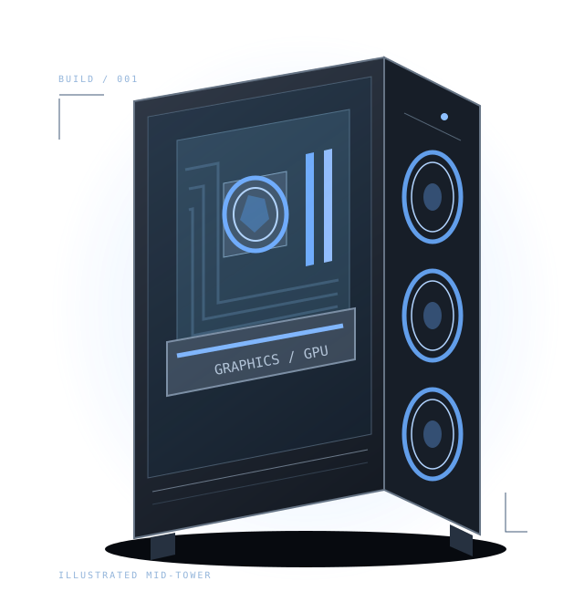

YOUR FIRST BUILD STARTS HERE
Great PCs aren't
just bought.
They're built.
From a box of parts to a setup that feels like yours. Get to know the components, learn the process, and plan your first PC with confidence.

THE BUILDREADY APPROACH
One build. Three simple stages.
You don't need to know everything.
Just start with the next step.
Meet your components.
CPU, GPU, memory, and the parts that bring it all together. Learn what each one actually does.
Explore components ↗ 02 / ASSEMBLEBring the parts together.
A practical overview of preparation, installation, cable connections, and your first power-on.
Follow the guide ↗ 03 / PLANMake it your own.
Work through a sample budget and a compatibility checklist before choosing your final parts.
Open the planner ↗WHY PC BUILDING?
More than a finished setup.
PC building brings technology and creativity together. Every component has a purpose, and every choice shapes the finished computer. Learning how the parts connect makes the inside of a PC feel much less mysterious.
This site focuses on understanding that process. The goal is to help a first-time builder ask better questions, check compatibility, and enjoy turning separate components into a working system.